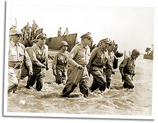

|
j
a v a s c r i p t |
October 21, 1944
Tribune: "Nippon forces in Leyte set for invaders" — up-set, actually. "Latest move seen as attempt to hide Taiwan Loss," to recoup prestige lost in the 'Air Battle of Taiwan.' "With the presidential election but a few weeks off, the White House must have a victory for electioneering purposes."

Feet Wet in Leyte
Radio News: MacArthur, Sutherland, Osmeña, Valdes and Romulo waded ashore before a battery of cameras. Mac went for a brisk walk under the drizzly skies then conferred with Osmeña for 15 minutes. When the transmitter was established, he spoke to the Filipino people: This is the Voice of Freedom, General MacArthur speaking. People of the Philippines, I have returned. By the Grace of God, our forces are once again on Philippine soil.... At my side is your President, Sergio Osmeña.... I now call upon you for a supreme effort. Rally to me. Let the undying courage of Bataan and Corregidor be reborn ... rise and strike! It was an impressive delivery. On the landing boat earlier, he smacked Sutherland on the knee and exclaimed: "Believe it or not, we're back." Later, he also said: "I'll stay for the duration now." Hundreds of Filipino soldiers are among the forces that landed. Jack Rapaport is expecting his brother Mike to be among them. Romulo cautioned against mistaking Filipinos for Japanese, with possible tragic consequences. Each American and Aussie soldier was given a booklet: "Why we're going to the Philippines." Domei admitted the landing at 1600. Radio Tokyo said the Americans failed to land on Thursday, but succeeded in landing "part" of their forces on Friday. They claimed many barges were sunk, adding two battleships "destroyed" and one transport "sunk" on Thursday, one large transport "sunk" plus two carriers "destroyed" on Friday. To that you have to add the aircraft carrier sunk last Sunday and the three heavily damaged two or three days later. The Japanese can't put out a total box score for all the American warships sunk since the war began — the totals would embarrass them greatly. |
|
|
|
|